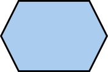

<!doctype html>
<html>
<!-- a new version of the go/nogo task.
in this version: short presentation of stimulus and then fixation, whitout ISI.
ages 7+
should use multi-stim-multi-response plugin and add to it a mouse option. -->

<head>
  <title>Go NoGo</title>
  <script src="https://ajax.googleapis.com/ajax/libs/jquery/1.11.1/jquery.min.js"></script>
  <script src="jspsych-5.0.3/jspsych.js"></script>
  <script src="jspsych-5.0.3/plugins/jspsych-single-stim-mouse.js"></script>
  <script src="jspsych-5.0.3/plugins/jspsych-text.js"></script>
  <script src="jspsych-5.0.3/plugins/jspsych-button-response.js"></script>
  
  <script src="GivitiExternalStorage/js/ExternalStorage.js"></script>
  
  <link href="jspsych-5.0.3/css/jspsych.css" rel="stylesheet" type="text/css"></link>
  <link href="creactive-tasks.css" rel="stylesheet" type="text/css"></link>
</head>

<body id="goNoGoCanvas">

</body>
<script>

    var appName = "CREACTIVEAmbulatoryTasksGoNoGo";
    var storage = null;

    function loadConfigs(){
        var promise = $.getJSON("conf.json");
        promise.done(function (data) {
            console.log("Config loaded!");
            storage = new it.marionegri.givitiweb.ExternalStorage(data.translationServiceURL, data.dataStorageServiceURL);
        });
        promise.fail(function (error) { 
            console.log(error);
        });
        return promise;
    }
    
    function loadTranslations (culture) {
        var promise = storage.loadTranslations("GoNoGo Task", culture)
        promise.done(function () {
            console.log("Translations loaded!");
            if (Object.getOwnPropertyNames(jsPsych.currentTrial()).length > 0) {
                jsPsych.endExperiment("Test");
                jsPsych.endCurrentTimeline();
                launchJSPsych(false);
            } else {
                launchJSPsych(true);
            }
        });
        promise.fail(function (error) { 
            console.log(error);
        });
        return promise;
    }

    var languages = it.marionegri.givitiweb.PageUtils.getListOfLanguages();
    loadConfigs()
        .done(function() {
          if (languages == null || languages.length == 0) {
              loadTranslations("en-US");
          } else {
              loadTranslations(languages[0]);
          }
    });
    
    function onChangeLanguage(sel) {
        loadTranslations(sel.value);
    }

    /* define welcome message block */
    //age = prompt("What age are you?");
    var age = it.marionegri.givitiweb.PageUtils.getAge();
    if (age == null) {
      age = prompt("What age are you?");
    }
    

  function sleep(milliseconds) {
    console.log("insleep");
  var start = new Date().getTime();
  for (var i = 0; i < 1e7; i++) {
    if ((new Date().getTime() - start) > milliseconds){
      break;
    }
  }
};
  function launchJSPsych (fullscreen) {
      // Set the variables for each age.
      var stimExp = 0;
      var maxTime= 0;
      var ageCount = 0; // set how many trials to feedback
	  if (age == 0) {
	stimExp = 1000;
	maxTime = 1000;
	ageCount = 5;

	} else if (age > 0 && age <= 3) {
	stimExp = 2000;
	maxTime = 2000;
	ageCount = 5;
	} else if (age >3  && age <= 7) {
	stimExp = 1000;
	maxTime = 1000;
	ageCount = 5;
	}

	else if (age > 7 && age <= 10) {
	stimExp = 500;
	maxTime = 1500;
	ageCount = 200;

	} else if (age > 10) {
	stimExp = 500;
	maxTime = 1500;
	ageCount = 200;
	}


      var languages = it.marionegri.givitiweb.PageUtils.getListOfLanguages();
      var languageSelect = "<select onchange='onChangeLanguage(this)'>";
      for (var k in languages) {
         if (storage.currentCulture == languages[k]) {
            languageSelect += "<option value='" + languages[k] + "' selected>" + languages[k].substr(0, 2) + "</option>";
        } else {
            languageSelect += "<option value='" + languages[k] + "'>" + languages[k].substr(0, 2) + "</option>";
        }
      }
      languageSelect += "</select>";

      /* define instructions block */
      var instructions_block = {
        type: "text",
        cont_key: "mouse",
        text: storage.getTranslation("goNoGoInstructions") +
          "<p>Age: " + age + "</p>" + languageSelect
      };

      var after_practice = {
      type: 'button-response',
      stimulus: storage.getTranslation("afterPractice"),
      choices: ['Repeat', 'Continue'],
      is_html: true,
      button_html: "<a class='jspsych-btn'>%choice%</a>"

    };

    // should use multi stim
   	// build array of arrays (stimulus and then fixation. etc.)
   	//var fixation = '<DIV id="goNoGoFixationPoint">+</DIV>';
   	var stim = "<DIV id='goNoGoFixationPoint'></div>";
   	var stop = "<DIV id='goNoGoFixationPoint'></div>";
   	//var stimArr =    //[stim, fixation];  // array to show stimulus and then fixation
   	//var targetArr =   //[stop,fixation]; // array that will show target and then fixation
   	var test_stimuli = [ 
   		{
         stimulus: 'static/images/square.png',
         data: {response: "go"},
         usemouse: true,
         //timing_stim: [200,1500]

         },
         {
          stimulus: 'static/images/target.png',
          data: {response: "NoGo"},
          usemouse: true,
         
         }

   	];
   	
   	// build an array of the two arrays
   	var totalArr = jsPsych.randomization.repeat(test_stimuli, [90, 30], false);
   	console.log(totalArr);
   	var blockOne = {
   		type: 'single-stim-mouse',
   		timeline: totalArr,
   		usemouse: true,
   		timing_stim: stimExp,
   		timing_response: maxTime
   	};

   	  
      jsPsych.init({
        timeline: [instructions_block, blockOne],
       // show_progress_bar: true,
        fullscreen: fullscreen,
        default_iti: 0,
        on_finish: function() {
        //    jsPsych.data.displayData();
            storage.saveData(appName, jsPsych.data.getData());
        }
      });
    
  };

</script>

